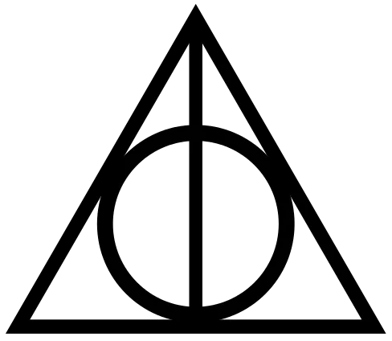

Harry Potter
About this story
This story follows the life of a 11 year boy Harry Potter in a normal world. Little does he know that he is a wizard who survived the killing curse of the most infamous Dark Lord Voldemort. Harry life changes when a bear like man Hagrid informs him that he is wizard enrolled for the most famous wizarding school Hogwarts School Of Witchcraft And Wizardary.Will Harry defeat the Dark Lord and end his reign of terror?